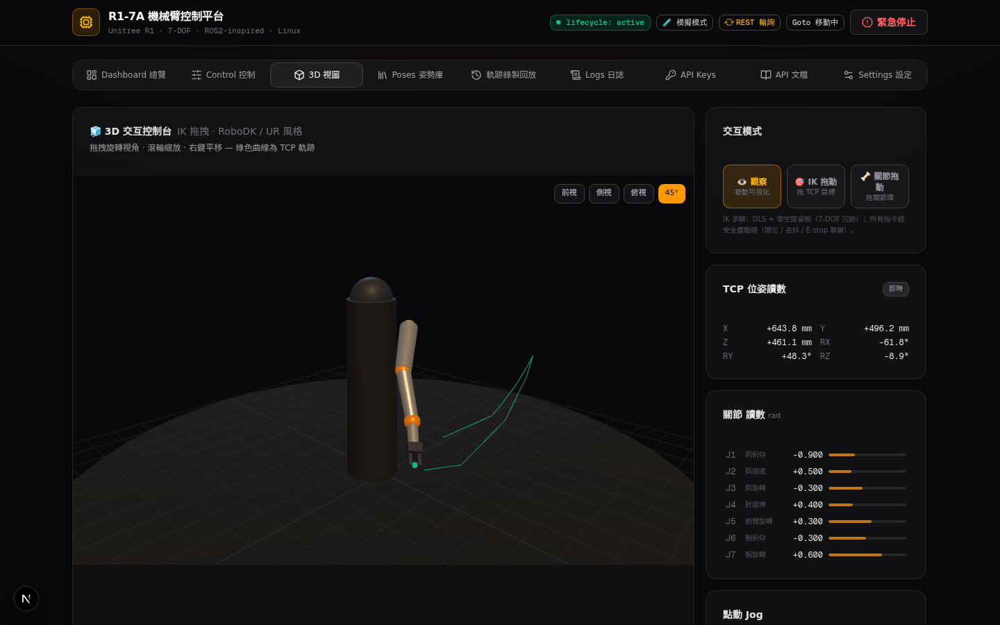

home 指令後 3D 讀數 [0, 0.10, 0, 0.55, 0, 0, 0] — 與 ARM_HOME 一致（VLM 視覺驗證）
three.js 0.171 重建 URDF 嵌套樞軸：pitch→X / roll→Z / yaw→Y
20Hz 採樣 TCP 路徑，綠色軌跡線即時描繪
急停觸發 → 關節球即時轉紅，狀態一目了然
OrbitControls + 前/側/俯/45° 預設 + 線框模式切換